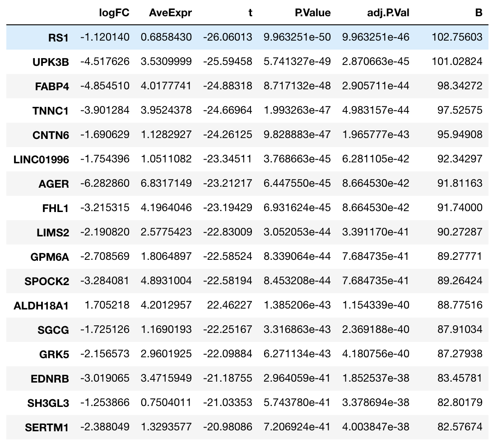
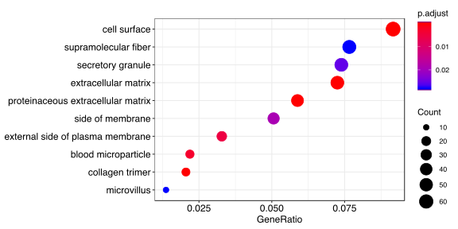
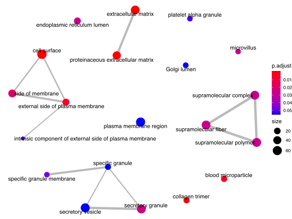
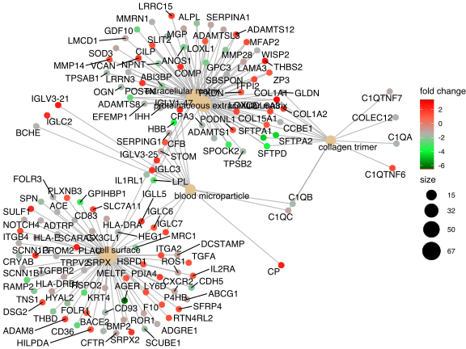
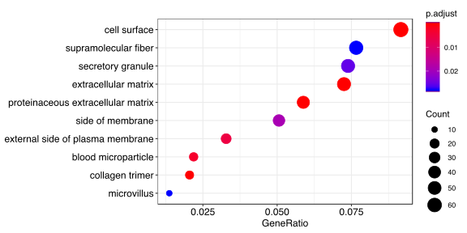
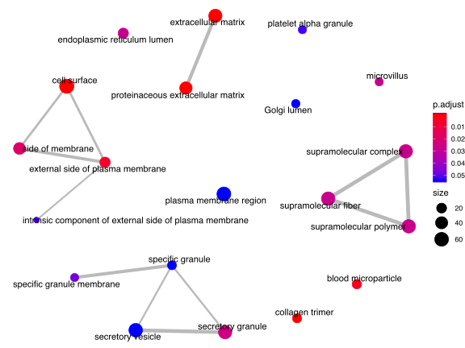
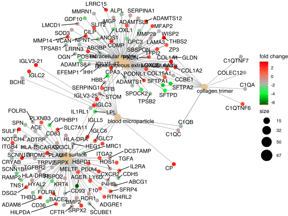

GO分析
应用场景
功能富集就是GO分析常规的应用

所用数据和KEGG一样
load('./FC_P.Rdata')#rt_FC_P
#准备KEGG需要的数据
library(clusterProfiler)
library(pathview)
eg = bitr(row.names(rt_FC_P), fromType="SYMBOL", toType="ENTREZID", OrgDb="org.Hs.eg.db")
gene_list <- rt_FC_P$logFC[match(eg$SYMBOL, row.names(rt_FC_P), nomatch = 0)]
names(gene_list) <- eg$ENTREZID
gene_list <- gene_list[order(gene_list, decreasing = TRUE)]
gene <- names(gene_list)[abs(gene_list) > 1]
#计算gene和gene list所富集的生物学功能
#GO analysis
ggo <- groupGO(gene = gene, OrgDb = org.Hs.eg.db, ont = "CC",
level = 3, readable = TRUE)
ego <- enrichGO(gene = gene, universe = names(gene_list), OrgDb = org.Hs.eg.db,
ont = "CC", pAdjustMethod = "BH", pvalueCutoff = 0.1,
qvalueCutoff = 0.05, readable = TRUE)
#barplot展示功能富集的基因数量和pvalue
barplot(ego, showCategory=8)
#dotplot展示功能富集的基因数量和pvalue
dotplot(ego)
#以网络展示富集生物学功能之间的关联
emapplot(ego)
#以网络展示主要的生物学功能基因，以及该基因的表达变化
cnetplot(ego, categorySize = "pvalue", foldChange = gene_list)
 




